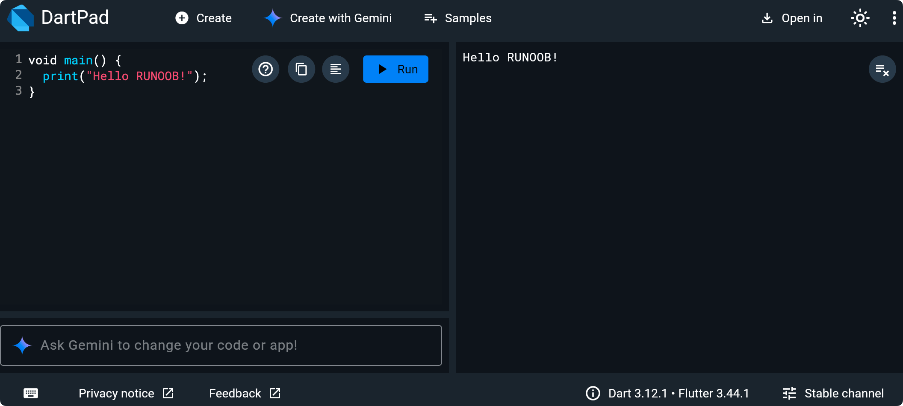

Setting Up the Dart Development Environment
The first step in learning any programming language is to set up a usable development environment locally.
This chapter will guide you through installing the Dart SDK, configuring an editor, and running your first Dart program.
Online Experience
If you just want to quickly try Dart without installing anything locally,DartPadis the most hassle-free choice.
DartPad is the official online editor provided by Dart. No registration is required — just open your browser to write and run code.
Access address：https://dartpad.dev

Main Features of DartPad
- Write and run Dart code online, view output in real time
- Built-in multiple sample programs, suitable for quick start.
- Supports sharing code links, convenient for collaboration and asking questions.
- Supports Flutter code preview (you can run simple Flutter interfaces in the browser)
Install Dart SDK
The Dart SDK includes all the tools needed to compile, run, and debug Dart programs.
Choose the corresponding installation method according to your operating system.
macOS Installation
If you use macOS, it is recommended to install via Homebrew:
$ brew tap dart-lang/dart $ brew install dart
After installation, verify the version:
$ dart --version Dart SDK version: 3.5.0 (stable)
Windows Installation
Windows users can install it via the Chocolatey package manager:
C:\> choco install dart-sdk
Or visit directlydart.dev/get-dartDownload the installation package and double-click to run the installation wizard.
Linux Installation
Debian/Ubuntu systems can be installed via apt:
$ sudo apt-get update $ sudo apt-get install apt-transport-https $ wget -qO- https://dl-ssl.google.com/linux/linux_signing_key.pub | sudo gpg --dearmor -o /usr/share/keyrings/dart.gpg $ echo 'deb [signed-by=/usr/share/keyrings/dart.gpg arch=amd64] https://storage.googleapis.com/download.dartlang.org/linux/debian stable main' | sudo tee /etc/apt/sources.list.d/dart_stable.list $ sudo apt-get update $ sudo apt-get install dart
Verify Installation
On any system, after installation you can confirm the SDK works properly with the following command:
$ dart --version $ dart --help
If you can see the version number and help information, the installation was successful.
Use the DartPad online editor.
If you don't want to install any software for now, DartPad is the fastest way to get started.
DartPad is the official online Dart editor provided by Google. No registration is required — use it right away.
Access address:https://dartpad.dev
DartPad features:
| Features | Description |
|---|---|
| Zero Configuration | Open your browser to write and run Dart code |
| Supports Flutter | Switch to Flutter mode to write examples with a UI |
| Code Sharing | Generate a link to share your code snippets |
| Syntax Highlighting | Built-in Dart syntax highlighting and code completion. |
| Version selection | Supports selecting different Dart/Flutter versions. |
DartPad is great for quickly verifying syntax and sharing code snippets. However, for full project development, it is recommended to set up a local IDE environment.
Configure VS Code
VS Code is currently the most popular Dart development editor, and with the official plugin it delivers an excellent development experience.
Installation Steps
First, make sure VS Code is installed (available atcode.visualstudio.comDownload).
Second, open VS Code and go to the extension marketplace (shortcutCmd+Shift+XorCtrl+Shift+X）。
Step 3: Search and installDartExtension (published by Dart Code).

When installing the Dart extension, the Flutter extension will be installed automatically (if the Flutter SDK is detected). If you plan to learn Flutter later, it is recommended to install the Flutter extension as well.
Verify Configuration
After installation, create a new file in VS Code and name ithello.dart。
Enter the following code; if you see syntax highlighting and code hints, the configuration is successful.
Example
print('Hello, EXAMPLE!');
}
Run Code
There are three ways to run Dart code in VS Code:
| Method | Operation |
|---|---|
| Right-click menu | Right-click in the editor area → Run Without Debugging |
| Shortcuts | Ctrl+F5(Windows) orCmd+F5（Mac） |
| Terminal Commands | Open the terminal and enterdart run hello.dart |
$ dart run hello.dart Hello, EXAMPLE!
Other IDE Options
| IDE | Plugin name | Applicable scenarios |
|---|---|---|
| IntelliJ IDEA | Dart Plugin | First choice for Java/Kotlin developers |
| Android Studio | Built-in Support | Flutter mobile development |
| VS Code | Dart Extension | General-purpose development, lightweight and fast |
A First Look at the Dart Project Structure
Besides running single files, Dart also supports a standardized project structure.
You can quickly create a Dart project skeleton using the `dart create` command:
$ dart create my_first_app
The generated directory structure is as follows:
my_first_app/ ├── bin/ │ └── my_first_app.dart # 程序入口文件 ├── lib/ │ └── my_first_app.dart # 库代码（可复用） ├── test/ │ └── my_first_app_test.dart # 测试文件 ├── pubspec.yaml # 项目配置文件（依赖管理） ├── analysis_options.yaml # 静态分析规则 └── README.md
Explanation of each directory's purpose:
| Directory/File | Purpose |
|---|---|
| bin/ | Stores the entry file for executable programs |
| lib/ | Stores library code that can be referenced by other projects |
| test/ | Stores unit test files |
| pubspec.yaml | Project metadata and dependency declarations |
| analysis_options.yaml | Configure rules for static code analysis |
Enter the project directory and run the project:
$ cd my_first_app $ dart run
Hello world: my_first_app!
other extensionsWhile learning basic syntax, we mainly use single-file mode. When you start writing your own small projects, use `dart create` to set up a standard project structure.